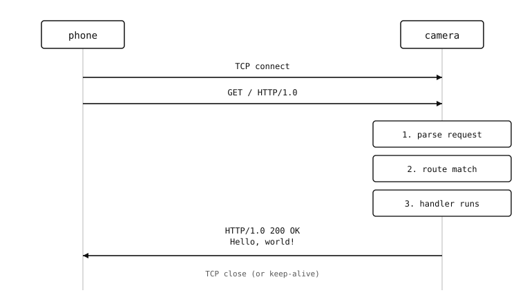

10.1. Endpoint đầu tiên của bạn¶
Trước khi cam có thể làm bất cứ điều gì thú vị, phần còn lại của mạng phải có thể kết nối đến nó. Cách đơn giản nhất để chứng minh server đang hoạt động là một HTTP endpoint một route trả về JSON:
from microdot import Microdot
app = Microdot()
frame_count = 0
trigger_count = 0
@app.get('/status')
async def status(request):
return {'frames': frame_count, 'triggers': trigger_count}
app.run(host='0.0.0.0', port=80)
Chạy script trong IDE. Từ bất kỳ máy nào khác trên LAN, mở http://<cam-ip>/status. Trình duyệt hiển thị:
{"frames": 0, "triggers": 0}
Các bộ đếm chỉ là placeholder -- chưa có gì tác động đến chúng -- nhưng yêu cầu đã đi qua mạng, cam đã định tuyến, chạy một handler, và gửi JSON trở lại.
10.1.1. Ý nghĩa từng dòng lệnh¶
Mỗi tập lệnh dùng một instance microdot.Microdot. Instance này quản lý bảng định tuyến, các handler lỗi, và vòng đời (start, serve, stop). Ứng dụng lớn có thể tách thành nhiều module Python nhưng vẫn dùng chung một object app.
@app.get('/status') là decorator định tuyến. Ở đây chúng ta chỉ dùng microdot.Microdot.get(); post(), put(), và delete() sẽ xuất hiện ở các trang sau khi cam bắt đầu nhận các thao tác ghi.
Mọi route handler đều là một coroutine asyncio và nhận yêu cầu làm đối số đầu tiên. Handler không bắt buộc phải dùng request -- handler này bỏ qua nó -- nhưng tham số luôn có mặt để chữ ký hàm nhất quán.
Trả về một dict là cách ngắn gọn nhất để gửi JSON. Microdot tự động tuần tự hóa dict thành JSON và đặt Content-Type: application/json trong response. Trả về chuỗi gửi text/plain. Trả về một microdot.Response tường minh là dạng đầy đủ -- cần thiết khi nội dung là nhị phân hoặc khi response cần header tùy chỉnh.
app.run(host='0.0.0.0', port=80) khởi động server. 0.0.0.0 có nghĩa là lắng nghe trên mọi giao diện mà cam có -- cả ethernet có dây và wifi STA, nếu cả hai đều đang hoạt động. Port 80 là mặc định của HTTP, nên trình duyệt không cần gõ số port.
10.1.2. Một yêu cầu từ đầu đến cuối¶

Điện thoại mở kết nối TCP, ghi dòng request và các header, rồi chờ. Cam đọc các byte từ socket, phân tích chúng thành một object microdot.Request, khớp path và method với bảng định tuyến, await coroutine handler, tuần tự hóa kết quả trả về, ghi dòng status, header, và body trở lại socket, rồi đóng kết nối (mặc định HTTP/1.0) hoặc tái sử dụng (HTTP/1.1 với Connection: keep-alive). Toàn bộ quá trình mất thời gian xấp xỉ bằng thời gian round-trip mạng cộng với thời gian handler thực thi.
10.1.3. Lưu ý về blocking¶
run() là blocking -- nó không bao giờ trả về cho đến khi server dừng. Điều này ổn với server một mục đích duy nhất. Một ứng dụng cũng cần chụp khung hình hoặc chạy các coroutine khác thì dùng start_server() bên trong một asyncio.run() để HTTP server có thể chia sẻ vòng lặp với mọi thứ khác.
Ứng dụng trả lời một URL.